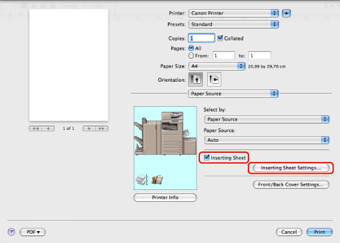
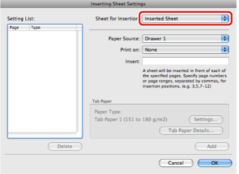

Inserting Sheets into the Document
You can insert blank sheets into documents for clearer distinction among sections, or insert sheets to use as chapter divider pages, which are useful to separate the document into chapters. You can also print on the inserted sheets.
|
NOTE
|
|
Depending on the printer model and controller version you are using, this option may not be available.
|
1.
From the [File] menu of the application software, select [Print].
The [Print] dialog box is displayed.
2.
The [Paper Source] preferences pane is displayed.
3.
Select the paper source for body pages of the document from [Paper Source].
4.
Select [Inserting Sheet] → click [Inserting Sheet Settings].

The [Inserting Sheet Settings] dialog box is displayed.
|
NOTE
|
|
The [Inserting Sheet Settings] dialog box may differ in appearance depending on the printer model you are using.
|
5.
Select either [Inserted Sheet] or [Chapter Page] from [Sheet for Insertion] to specify the type of inserted sheet.

6.
Select the side of paper to print on from [Print on].
|
NOTE
|
|
Chapter pages can be printed only on the front side of the page. Blank sheets cannot be inserted as chapter pages.
|
7.
Select the paper source for inserted sheets or chapter pages from [Paper Source].
8.
Enter the page number where the chapter page is to be inserted in the document in [Insert].
|
NOTE
|
|
If chapter pages are to be inserted in multiple locations, separate the locations using commas.
|
9.
Click [OK] in the [Inserting Sheet Settings] dialog box.
10.
Click [Print] in the [Print] dialog box.